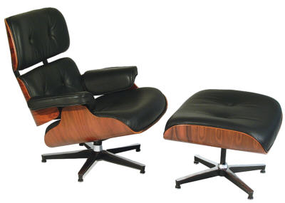

Charles Ormond Eames, Jr (1907–1978) and Bernice Alexandra "Ray" Eames (1912–1988) were American designers, who worked in and made major contributions to modern architecture and furniture. They also worked in the fields of industrial and graphic design, fine art and film.
The Eames' pioneered technologies, such as the molded plywood, fiberglass, plastic resin chairs and the wire mesh chairs designed for Herman Miller. Charles and Ray would soon channel Charles' interest in photography into the production of short films.
Charles Eames, Jr (June 17, 1907 – August 21, 1978) was born in St. Louis, Missouri. Charles was the nephew of St. Louis architect William S. Eames. While attending high school, Charles worked at the Laclede Steel Company part-time, where he learned about engineering, drawing, and architecture.
Ray-Bernice Alexandra Kaiser Eames was born in Sacramento, California. She graduated from Bennett Women's College in Millbrook, New York, and moved to New York, where she studied abstract expressionist painting with Hans Hofmann. One of her paintings is in the permanent collection of The Whitney Museum of American Art.